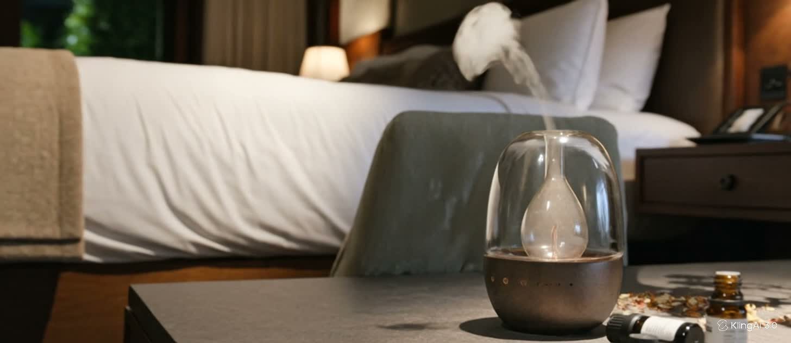

Koku pazarlaması nedir? Araştırmalar mekân kokusu hakkında ne söylüyor
Ortam kokusunun müşteri algısına etkisini inceleyen üç temel çalışma ve bu bulguların otel, mağaza ve ofislerde nasıl doğru kullanılacağı.
Koku pazarlaması araştırmaları, cihaz seçimi, klima bağlantısı, esans güvenliği ve doğru yoğunluk üzerine kaynaklı rehberler.
Ortam kokusunun müşteri algısına etkisini inceleyen üç temel çalışma ve bu bulguların otel, mağaza ve ofislerde nasıl doğru kullanılacağı.

Koku difüzörünün kapsama değeri neden m² değil m³ ile verilir, hacim nasıl hesaplanır ve hangi durumlarda birden fazla cihaz gerekir.

İki yaygın atomizasyon yöntemi nasıl çalışır, hangisi hangi mekâna uygundur? Ses, bakım, esans kullanımı ve kapsama açısından karşılaştırma.

Büyük mekânlarda kokuyu havalandırma kanalıyla dağıtmak: bağlantı noktaları, cihazın konumu, bakım ve proje öncesi toplanması gereken bilgiler.
İnsanlar sürekli maruz kaldıkları kokuya neden alışır, bu durum yoğunluk ayarını nasıl etkiler ve iç hava kalitesi için nelere dikkat edilmeli?

Uluslararası Koku Birliği (IFRA) standartları neyi düzenler, bir esansın uygunluğu nasıl belgelenir ve kurumsal alımlarda hangi belgeler istenmeli?

Bir otelin farklı alanları için koku ailesi ve cihaz seçimi: lobi, koridor, oda, spa ve restoran için pratik öneriler.